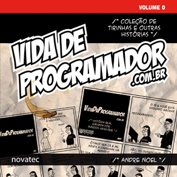

O blog Vida de Programador está lançando o seu primeiro livro com uma coletânea das suas melhores tirinhas que mostram o dia-a-dia do profissional de T.I.
Novatec Editora lança o primeiro volume da série Vida de Programador
Tirinhas bem-humoradas sobre a vida dos programadores vão virar série de livros

As tirinhas do site Vida de Programador fazem sucesso na internet entre estudantes e profissionais da área de informática que se identificam com as situações engraçadas que acontecem com os personagens: o Programador, o amigo P.A., o estagiário, o chefe, a esposa e outros que fazem parte das histórias sobre o universo dos programadores.
Andre Noel, criador do site conhecido por seu vício em café (por este motivo, a mancha de café na capa do livro), começou a criar as tirinhas em 2011 como uma forma de desestressar e contar as histórias curiosas e engraçadas que viveu e ouviu. O Vida de Programador cresceu, ganhou público fiel na internet e as tirinhas serão lançadas em uma série de livros publicados pela Novatec Editora.
Vida de Programador – Volume 0 é o primeiro da série e contém 136 páginas de tirinhas e outras histórias sobre o dia a dia dos profissionais de TI. Os leitores vão se divertir com o sarcasmo do personagem Programador lidando com o estagiário, as dificuldades ao tentar explicar o que é programação para sua mãe, a falta de paciência com as dúvidas dos usuários e os pedidos inesperados do chefe.
{kind=link}
Sobre o autor
Nascido em São Paulo (SP), mudou-se para Maringá (PR) aos 6 anos de idade (não por iniciativa própria) e vive lá desde então. Ainda criança, teve o primeiro contato com o computador na empresa de seu pai, onde jogava joguinhos em um monitor monocromático.
Desde pequeno apaixonou-se pela computação, chegando a pedir um “Apple Macintosh” para a Porta da Esperança, mesmo sem saber direito o que isso significava.
Mais novo de três irmãos, teve o primeiro computador em casa somente aos 14 anos, um 386, que tempos depois ele estragou testando para descobrir para quê serviam alguns arquivos do sistema.
Formou-se em Ciência da Computação na UEM (Universidade Estadual de Maringá), onde conheceu o Linux, tornou-se usuário em 2002 e membro oficial da comunidade Ubuntu em 2005. Atualmente está fazendo mestrado, também em Ciência da Computação.
Faz programas por dinheiro desde 2002, sendo um profundo conhecedor de métodos alternativos (gambiarras) e totalmente viciado em café.
Mantém a sua lucidez graças à sua linda esposa Raquel e desenvolveu com perfeição duas novas instâncias da classe Ser Humano, o Mateus e a Gabrielle.
Em 2011, começou o site Vida de Programador, como uma forma de desestressar e contar as diversas histórias que viveu e ouviu. Só consegue desenhar porque um dia aprendeu a manipular vetores. Nunca imaginou a proporção que isso ia tomar e que um dia escreveria um livro sobre isso.
Por fim, graças à sua inigualável beleza, passou a aventurar-se como videologger no YouTube e parece que está dando certo.
Detalhes do livro:
Título: Vida de Programador
Autor: Andre Noel
ISBN: 978-85-7522-320-8
Número de páginas: 136
Preço: R$ 29,00